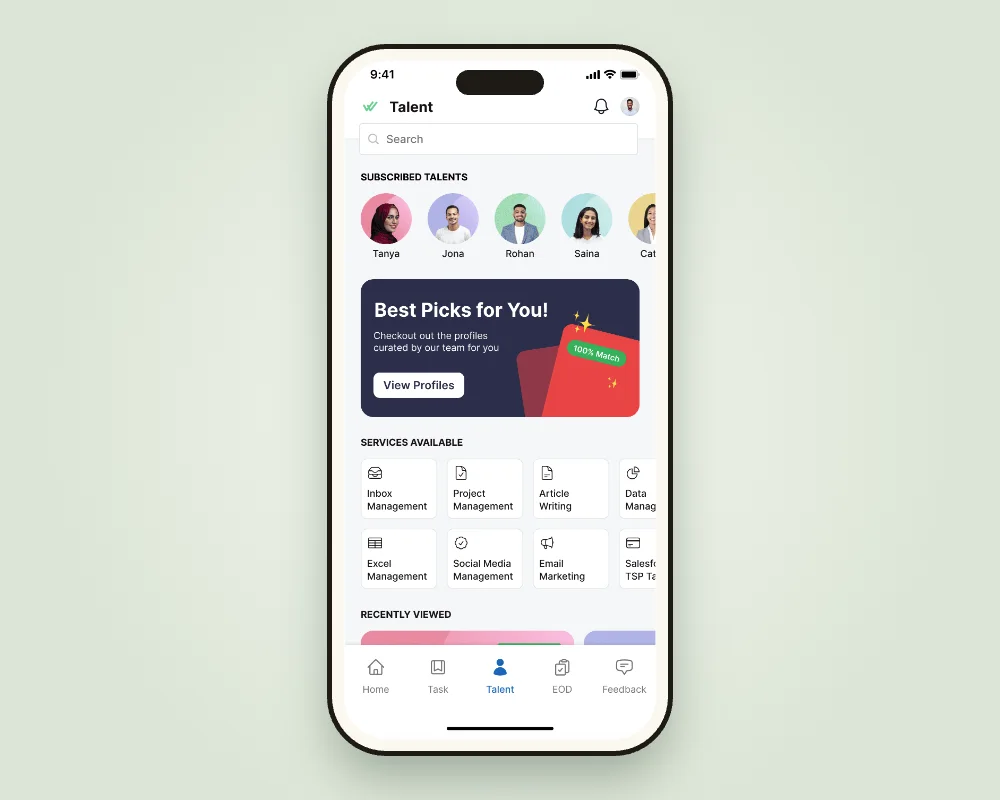
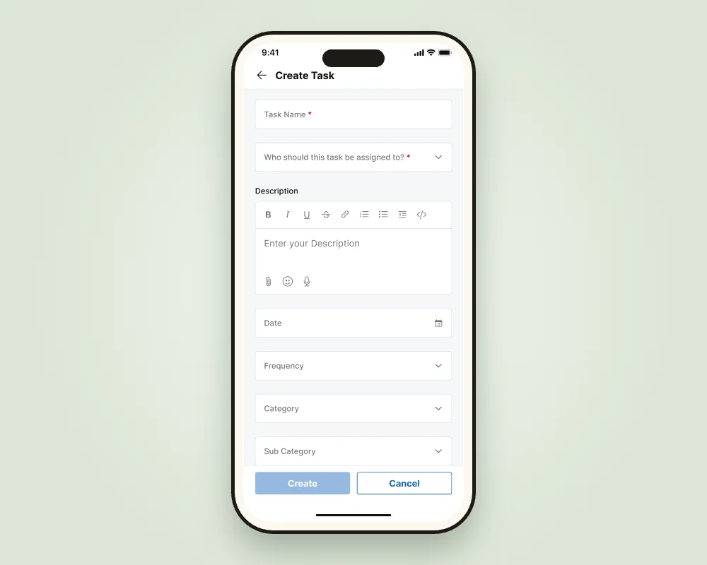
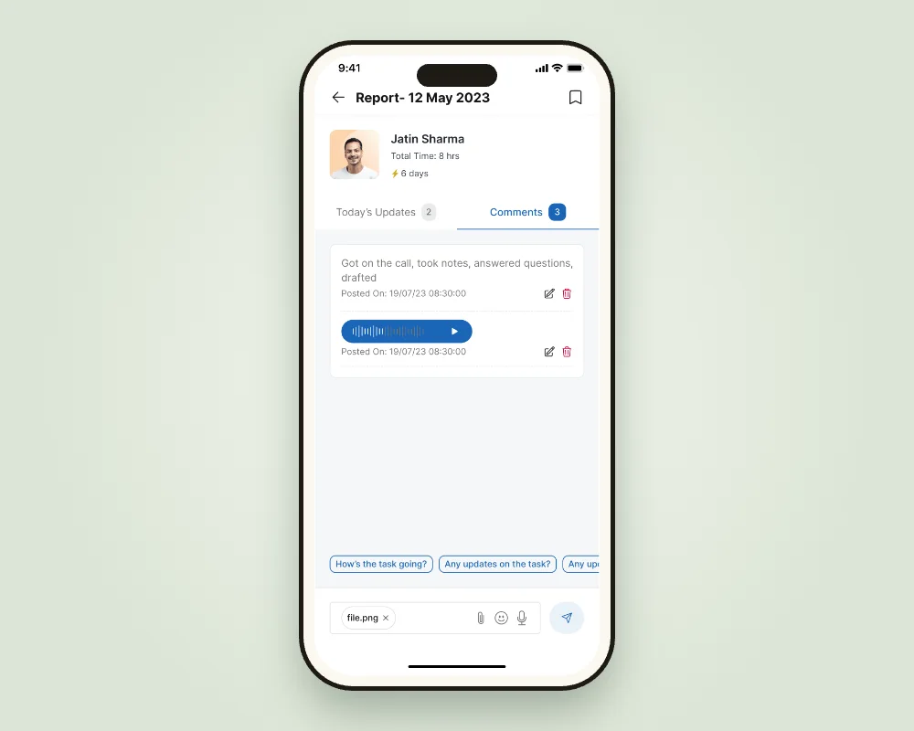
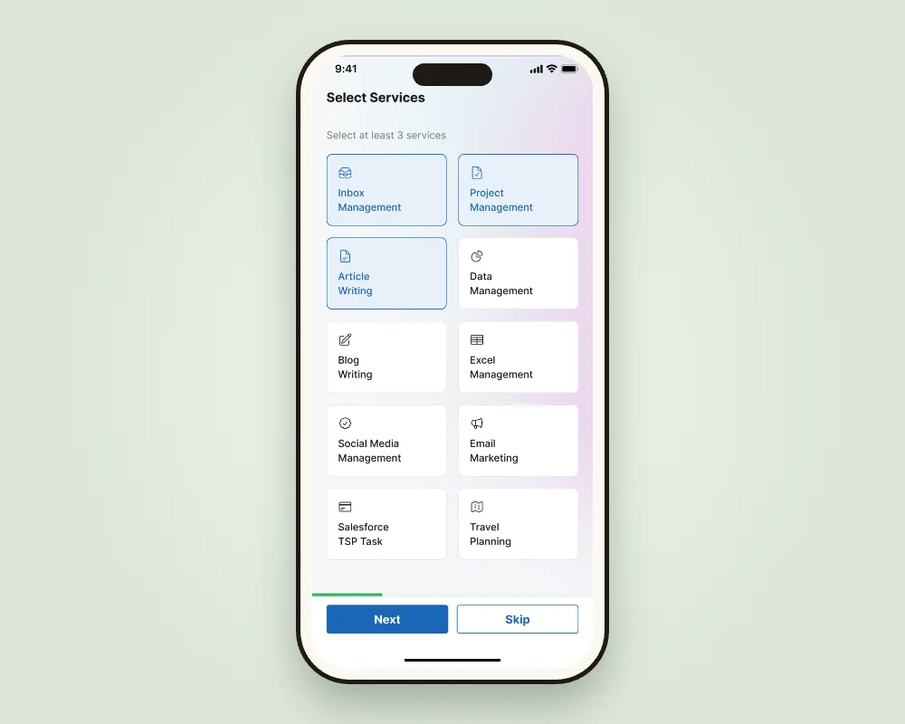
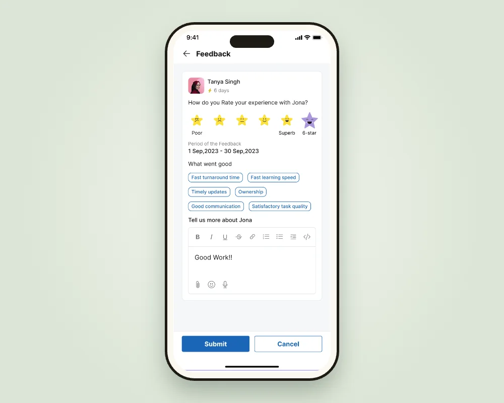
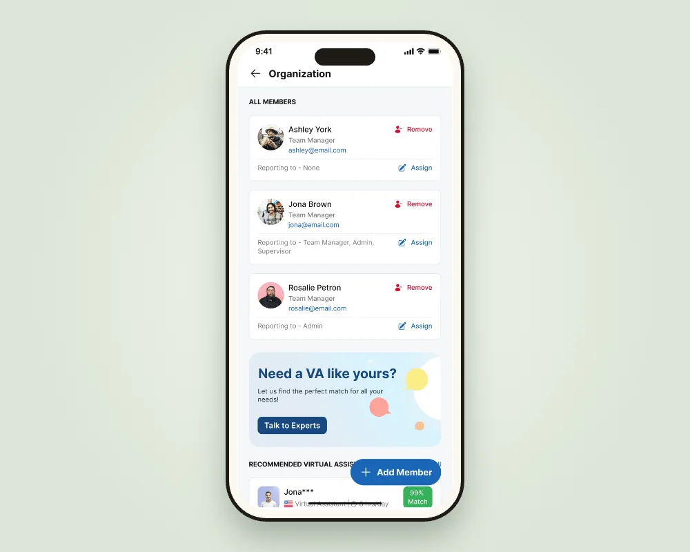
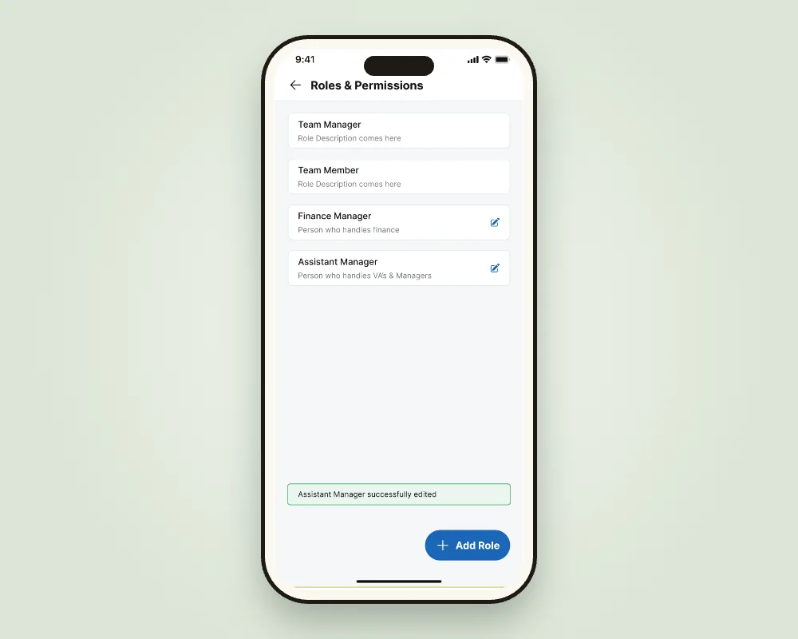

Got 30 seconds?
The problem
Wishup matches clients with virtual assistants (VAs). The work between them lived in Slack, email and informal messages, and VAs rewrote their day into an end-of-day (EOD) report by hand. Clients switched between apps just to know what got done.
What I did
As the designer on the client app, working with our design manager, I designed one place for the whole relationship: tasks both sides can update, EOD reports drafted from those tasks, quick feedback, and roles for teams.
- ~15%
- of VAs' productive time saved on EOD reporting
- 5% → 70%
- of clients, of revenue: who we designed for
Where we started
A service run on Slack threads
Wishup is an Indian startup that matches business owners with trained virtual assistants. Three groups had to be happy at once: the client who pays, the VA who does the work, and the Wishup team that keeps the match going.
We started with interviews with the in-house team, Clarity session recordings and an audit of the existing dashboards, then followed up with client interviews and surveys. One finding reset the brief: the top 5% of clients brought in over 70% of revenue. They became the people we designed for: owners who delegate a lot, have little time, and want to see their team's day without chasing it.
North star: every task, update and report in one place, so nobody has to ask "what happened today?"

01Switchback · Work in Slack
Tasks were assigned in a chat message
Clients assigned work over Slack or email, VAs replied in the same threads, and status lived in someone's memory. The old app had few reasons to open it at all.
InsightIf a task lives in one place with a status both sides can change, nobody has to ask for an update.
Create and assign tasks in the app
Name, assignee, description, date, frequency and category in one form, with attachments and voice notes.
Why it mattered: delegating took less effort than typing a Slack message.
Status that both sides update
Open, closed, one-time or recurring, flagged, with new updates counted on the card and time spent per VA.
Why it mattered: the task list became the status report.
Speech-to-text and suggestions for repeat work
Tasks can be dictated, and repeated tasks are suggested instead of retyped.
Why it mattered: busy owners delegate on the go.

02Switchback · EOD by hand
VAs wrote the same day twice
Every evening VAs rewrote their task notes into an EOD report, and clients received a long email they rarely opened in full.
InsightThe EOD should be a by-product of the day's work, not a second job.
EOD drafts built from task updates
The day's updates compile into a draft the VA reviews, instead of writing from scratch.
Why it mattered: the report took minutes, not a chunk of the evening.
Highlights by email, the full report in the app
The email carries the key points and links into the app for details, comments and voice notes.
Why it mattered: the email became a way into the app.
Filters, bookmarks and EOD streaks
Clients with several VAs filter by person, date or unread; VAs keep a streak for timely reports.
Why it mattered: reports got read, and they arrived on time.

ResultAutomating the EOD saved VAs roughly 15% of their productive time, and streaks brought reports in on time more often.
03Switchback · A cold start
A generic start and feedback nobody gave
Every client saw the same app regardless of what they hired a VA for, and feedback on VAs was a long form that rarely got filled.
InsightAsk for what the client needs on day one, and make feedback as quick as a reaction.
Onboarding that starts with services
Clients pick at least three services, from inbox management to travel planning, so the app opens on what matters to them.
Why it mattered: a personal first screen instead of an empty one.
Feedback in a few taps
A rating with expressive stars, a "6-star" for standout work, and quick tags like "Fast turnaround" or "Ownership".
Why it mattered: Wishup heard about VAs often, not just when something broke.


04Switchback · One login, many people
Teams shared one account
Larger clients had managers, finance people and assistants all needing access, with no way to separate who sees what, including payments.
InsightThe biggest accounts are teams, so the app has to understand roles.
Default and custom roles
Team Manager and Team Member out of the box, plus custom roles with their own permissions.
Why it mattered: sensitive data like payment details stays with the right people.
Members, reporting lines and organisations
Add internal team members, set who reports to whom, and switch between organisations from one login.
Why it mattered: it fit how the top clients already worked.


Results
Where the climb landed
- ~15%
- VA time saved on EOD reports
- 5% → 70%
- of clients, of revenue: who we designed for
The team also saw higher client engagement and retention, and more subscription upgrades. A shared design system made engineering faster.
What I learned
Notes from the trail
- Design for the people who pay. Knowing the top 5% of clients drove most revenue changed every priority.
- Make the report a by-product. The best EOD was the one nobody had to write from scratch.
- Bring the conversation to the work. Comments and voice notes on a task beat a Slack thread about it.